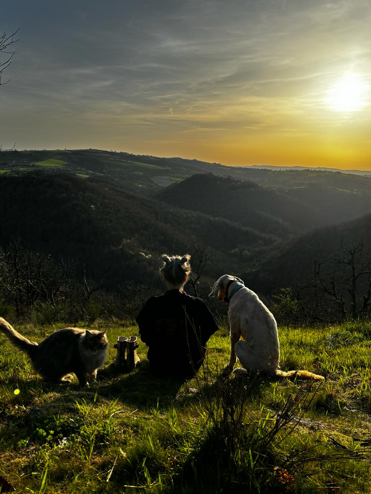

Qui suis-je ?
Depuis mon enfance, l’empathie et la sensibilité envers le vivant m’accompagnent. J’ai moi-même traversé de longues périodes de doutes, de fractures et de fatigue émotionnelle. J’ai suivi différentes formations en développement personnel et spirituel.
Mon parcours de vie m'a conduite vers le soins Egypto-Esseniens et la Communication Animale. Grâce à ces méthodes, j'ai découvert une offrande, une connexion de l'être. Elles m'ont aidée à me rassembler, à fleurir, à grandir en moi-même.
A mon tour, je suis devenue thérapeute en Soins Esseniens et Communication Animale. Ce fût une évidence, un appel du coeur.
